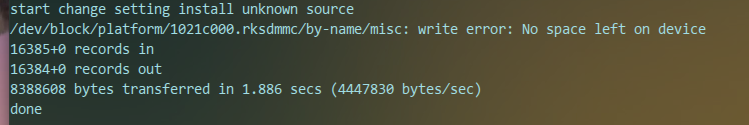

本文所涉及的文件(如果有的话)大部分可以通过文章末尾的链接下载.
若干个月前,办了一个宽带,然后送了一个华为悦盒,我家电视是十多年前买的那种老电视,俗称彩电.办宽带的时候说时送1年IPTV.
我也不懂是啥,据说可以看电视,但是当时我家有大锅,我就没去鼓捣,然而一次大锅不小心被风吹废了.于是就想起了送的1年免费IPTV.
然而,一番折腾,怎么也连不上,IPTV总是提示账号连接不成功.于是我就给联通打电话,反应相当迅速,上午打,下午技术人员就来了.
技术人员弄了一下午,告诉我,你去买个天猫魔盒吧,你的IPTV可能是被人给注销了,我心里一万个"纳尼????",一下午就给我个这??
默默送走了技术人员,我父母说,这咋整,看不成电视了.我说那就让我have a try...于是有了此文...
我从http://www.znds.com/和bbs.shafa.com得到了许多帮助,特此感谢,我主要是按照前辈们的指导步骤去做并实践成功,底层的原理还不是很清楚,but hacking is always on the way.
先说一下悦盒相关信息:
系统版本:Android4.4.4 软件版本:B012 硬件版本:EC6108V9A RAM(运行内存):1GB ROM(内置Flash闪存):4GB
配置还不错吧,我感觉确实挺好的,比路由器的可玩性多了去了.
连接方式
华为悦盒的连接方式如下:
USB连接
上图少画了一个Micro SD接口,不同机子可能位置,提供的接口不同.在刷机的时候,USB孔随便选择一个插入U盘,U盘不能超过4GB,
机子的配置ROM为4GB,32位的Linux内核,可寻址就这么大.刚开始没有4GB的U盘,我拿了个32GB的U盘,试了试果然不行,找来找去,
找到了一个Micro SD卡,正好还有个Micro SD接口,插上就好了.文末你可以下载对应的固件,解压后含有如下内容:
你要把这些文件放在U盘根目录下面,然后再插入到盒子上面.
网线连接
一根网线,一头连接到盒子上,一头连接到电脑上.
其他
其他按图连接即可.
刷机
我的盒子是不带装备测试选项,如果你的盒子有,依次[设置/更多/高级设置(密码8288)],
在高级设置的最下面会找到一个装备测试选项,没有也没关系,按下面的来就行.我的就没有.
这一步网上好多说的不清楚,都是狂按遥控上的开机键,哪里有开机键,我试了好大一会儿,是这样的:
关闭盒子上的开关,然后重新打开,打开的时候,不停的按下待机键,不是按着不松,而是快速的按下松开这样子.然后就进入刷机界面了.
刷机界面有如下内容:
Android system recovery
-----------------------------------------
Android system recovery utility
1.Apply update from external storage
2.Apply update from backup
3.Wipe dalvik-cache partition
4.Wipe date/factory reset
5.Wipe userdata partition
6.Reboot
我们就是选择第一个了,从外部存储也就是我们的U盘刷入固件.刷入成功后,会自动重启,
等待重启完毕,这样更新固件就搞好了,然后,依次[更多/高级设置(密码:10010)/装备测试(密码:131022)],
选择装备测试选项,进入即可.
获取root
现在回到你的电脑(我用的是Ubuntu 14.04 x64),设置有线网络连接如下:
IP地址选择手动,然后按照图上配置.完事儿后,打开命令行,输入命令 telnet 172.16.20.14:
接下来我们要把U盘mount到系统下面,先按照下图确定要mount的U盘文件格式以及分区等:
确定信息后,就很简单啦:
mkdir -p /tmp/udisk
mount -t vfat /dev/block/mmcblk1p1 /tmp/udisk
/tmp/udisk/rootv9a.sh
特别是中间那行,你自己要按照你自己的实际情况来.执行情况输出如下所示就表示成功了:

等待盒子重启后,把盒子的网线插到路由器上,Everthing is Done!But One more thing:
你可能发现WIFI连接不上,没事儿,能插上网线就行,测测网速吧,能测动就说明能联网了,
另外,这个固件里面的沙发应用有点旧,里面的一个电视直播总是"停止运行",升级一下就可以了!